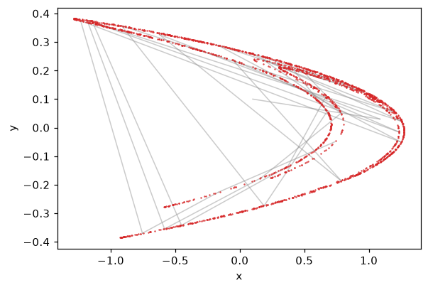

Plotting#
mappy_ds.plot contains two helpers built on matplotlib: a static
plot_trajectory() and an interactive
plot2d(). Matplotlib is an optional dependency:
pip install "mappy-ds[plot]"
import mappy_ds.plot works without matplotlib; calling a plotting function
then raises ImportError with the install hint.
Trajectories#
Map.trajectory (or image_detail(...,
trajectory=True)) returns a Trajectory: a list of
TrajectorySegment, one per visited mode whose
in_trajectory flag is set. A segment knows its mode name, its
kind ("continuous" or "discrete"), the sampled states y of
shape (dim, n_points) and, for continuous segments, the sampling times
t relative to the start of the segment. Trajectory.y concatenates all
segments when they share the same dimension.
Static plots: plot_trajectory#
plot_trajectory() draws the segments of a trajectory on
a matplotlib Axes (a new figure if ax is omitted) and returns the Axes.
xkey and ykey select the state components; segments whose dimension
is too small (for instance on a one-dimensional section) are skipped.
styles is either a single LineStyle or a
dictionary from mode name to style, with the optional key "_default" for
modes it does not list.
import numpy as np
import matplotlib.pyplot as plt
from mappy_ds import Diffeomorphism, mapping
from mappy_ds.plot import LineStyle, plot_trajectory
@mapping(2)
def henon(y, p):
x, u = y
return np.array([1 - p["a"] * x**2 + u, p["b"] * x])
henon_map = Diffeomorphism(henon)
params = {"a": 1.4, "b": 0.3}
fig, ax = plt.subplots()
# Each iteration is a two-point segment of the mode "map".
traj = henon_map.trajectory([0.1, 0.1], params, n=30)
plot_trajectory(traj, ax, styles=LineStyle("tab:gray", 0.4))
# The attractor itself: the points of a long orbit.
y, points = np.array([0.1, 0.1]), []
for _ in range(2000):
y = henon_map.image(y, params)
points.append(y)
points = np.array(points)
ax.plot(points[100:, 0], points[100:, 1], ".", markersize=1, color="tab:red")
ax.set(xlabel="x", ylabel="y")

Interactive plots: plot2d#
plot2d() iterates a map forever in a matplotlib
animation. Each frame computes one iteration, draws the trajectory segments
(unless only_map) and the image point, then continues from the image:
from mappy_ds.plot import LineStyle, PlotConfig, plot2d
config = PlotConfig(
xlim=(-1.5, 1.5), ylim=(-0.5, 0.5), xlabel="x", ylabel="y",
only_map=True,
param_keys=["a", "b"], param_step=0.01,
point_style=LineStyle("teal", 1.0),
)
anim = plot2d(henon_map, [0.1, 0.1], params, config)
It needs an interactive matplotlib backend. With show=True (the default)
it calls matplotlib.pyplot.show() and blocks; with show=False it
returns the FuncAnimation immediately — keep a
reference to it, or the animation stops.
Controls#
Input |
Action |
|---|---|
mouse click |
Restart from the clicked point. For a two-dimensional (or larger)
state, components |
space or |
Clear the axes. |
|
Toggle |
|
Select the next parameter of |
up / down |
Increase / decrease the selected parameter by |
If an iteration fails (for example a continuous mode does not reach its border), a message is printed and the animation pauses until you click a new initial point.
For a PoincareMap, mode= starts in a mode other than
initial_mode; later iterations continue from the end mode reached by each
image, so maps with several end modes work as expected.
PlotConfig#
PlotConfig is a dataclass; every field has a default.
Field |
Default |
Meaning |
|---|---|---|
|
|
Draw only the image points. |
|
|
Figure size in inches. |
|
|
Axis labels. |
|
|
Axis limits. |
|
|
State components on the horizontal and vertical axes. |
|
|
Width of trajectory lines. |
|
|
Size of point markers. |
|
|
Parameters adjustable with the keyboard. |
|
|
Index into |
|
|
Increment of one up/down key press. |
|
|
For one-dimensional states, the axis read on click. |
|
|
Style of trajectory segments, one for all or one per mode. |
|
|
Style of image points, chosen by the mode of the last segment. |
|
|
Style of the marker at a clicked initial point. |
LineStyle#
LineStyle is a frozen dataclass with a matplotlib
color (default "black") and an alpha (default 0.3). Per-mode
styles are dictionaries; for example, to colour two regions of a switched
system differently:
styles = {
"alp_1": LineStyle("orange", 0.6),
"alp_2": LineStyle("teal", 0.6),
"_default": LineStyle("gray", 0.3),
}
PlotConfig(trajectory_style=styles, point_style=styles)